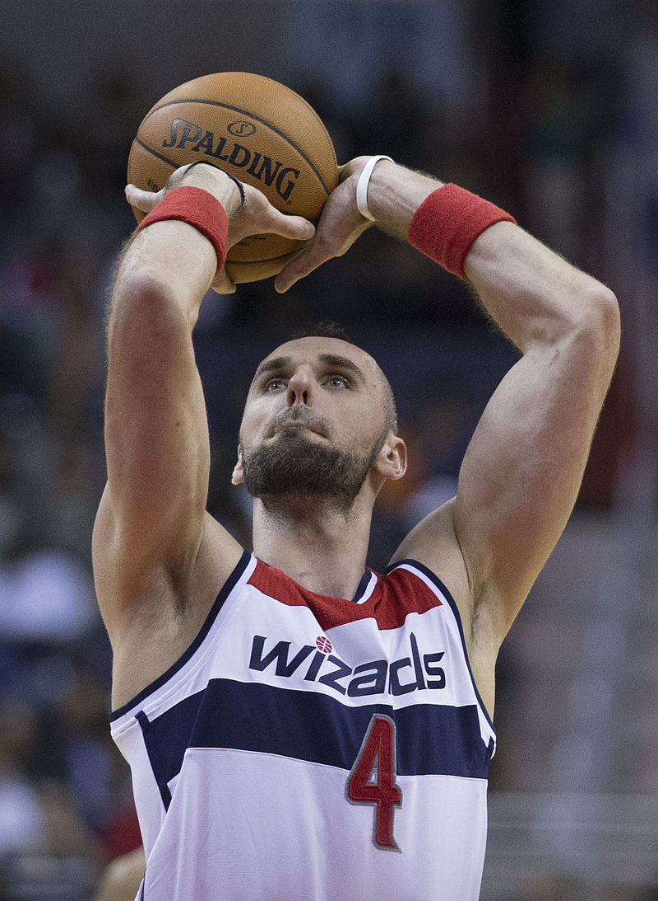

Marcin Gortat
Aktualna Drużyna
Dane
| Pozycja | Środkowy |
| Pseudo | The Polish Hammer, The Polish Machine |
| Data i miejsce urodzenia | 17 lutego 1984 Łódź, Polska |
| Wzrost | 214 cm |
| Masa ciałą | 108,9 kg |
Kariera
| Aktywność | od 2002 r. |
| Draft | 2005, numer: 57 Phoenix Suns (oddany do Orlando Magic) |
Kariera klubowa
| 2002-2003 | ŁKS Łódź |
| 2003-2007 | RheinEnergie Kolonia |
| 2007-2008 | Anaheim Arsenal |
| 2008-2011 | Orlando Magic |
| 2011-2013 | Phoenix Suns |
| od 2013 | Washington Wizards |

Marcin Janusz Gortat (ur. 17 lutego 1984 w Łodzi) – polski koszykarz, wychowanek Łódzkiego Klubu Sportowego, reprezentant Polski,
od sezonu 2013/14 zawodnik Washington Wizards. Jako jedyny Polak w historii NBA awansował do jej finału.
Rodzice: Alicja Gortat, Janusz Gortat
Rodzeństwo: Robert Gortat, Filip Gortat
54 wsady Gortata w jednym sezonie
Rekordy
| Punkty | 31 pkt (2 razy) przeciwko Toronto Raptors i przeciwko Indiana Pacers (play-off) |
| Rzuty z gry (celne) | 13 przeciwko Charlotte Bobcats |
| Rzuty z gry (ogólnie) | 23 przeciwko Toronto Raptors |
| Rzuty za "3"(celne) | 1 (3 razy) |
| Rzuty za "3"(ogólnie) | 2 przeciwko Dallas Mavericks |
| Celne osobiste | 11 przeciwko New Orleans Hornets |
| Rzuty osobiste | 14 przeciwko New Orleans Hornets |
| Zbiórki ofensywne | 9 przeciwko Miami Heat |
| Zbiórki defensywne | 16 przeciwko Boston Celtics |
| Zbiórki | 18 (3 razy) |
| Asysty | 6 przeciwko Atlanta Hawks |
| Przechwyty | 4 przeciwko Oklahoma City Thunder |
| Bloki | 7 przeciwko Charlotte Bobcats |
| Minut na boisku | 53 przeciwko Los Angeles Lakers |
Moje hobby. Copyright © Wszystkie prawa zastrzeżone